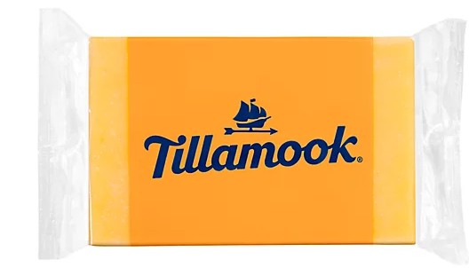
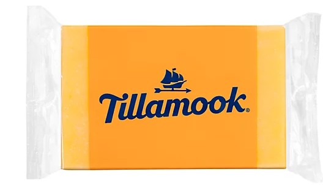

As I was working on the assignmets, I had given my little son, (who had just turned 6 on Sunday) a bowl of fruit.
After awhile he wanted some cheese. He didnt want string cheese this time, he wanted the square kind.
He was having difficulty opening this cheese and started getting impatient. I was focusing on my work, he tells me."Mom, if yourent going to help me open this!!"
He continues,"I dont like string cheese anymore, I want this square cheese!"
I tell him,"Chee son, theres a tab right there just rip it."
He replies frustratingly,"I dont see it? Where? WHERE??"
Jeez he really deepened his voice, my little cheese gremlin.
 
